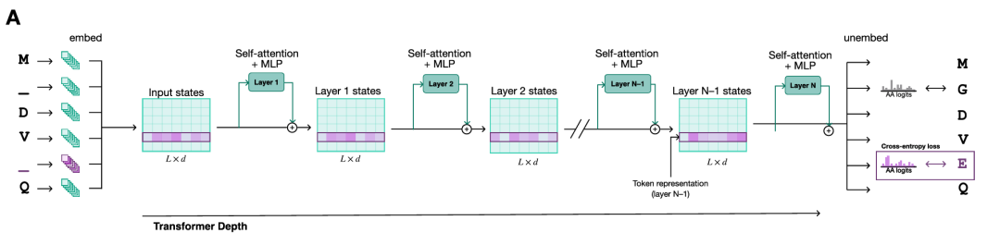
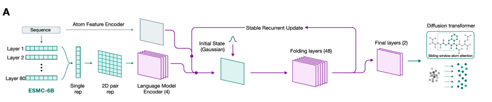
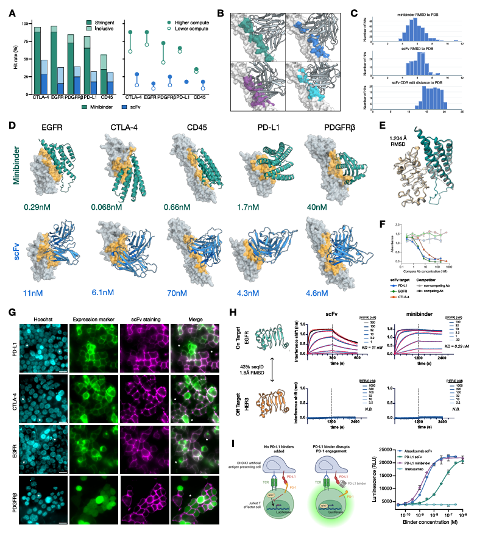
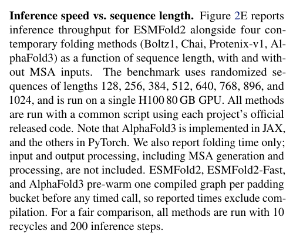
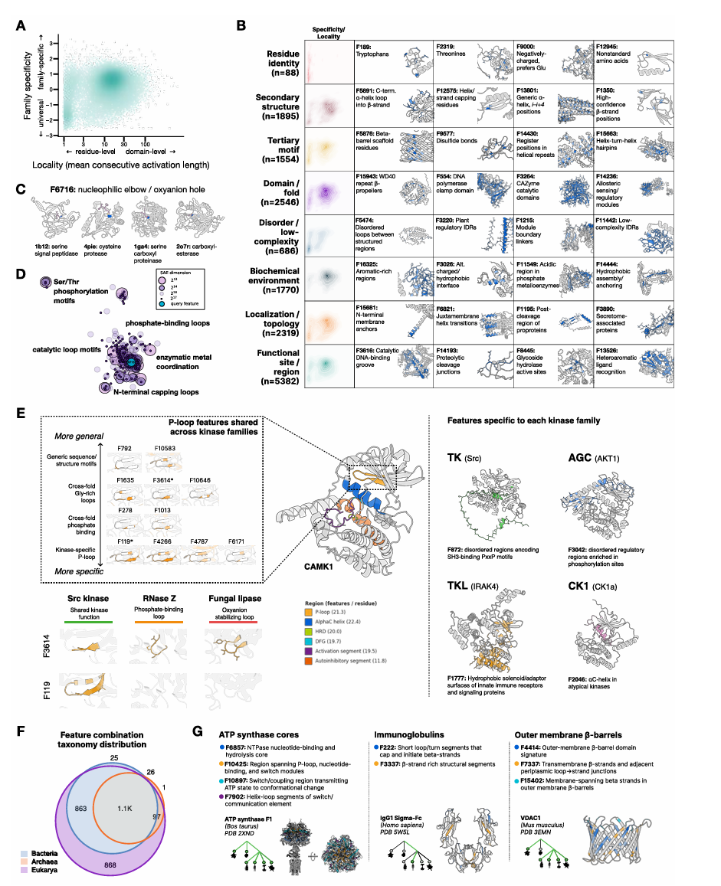
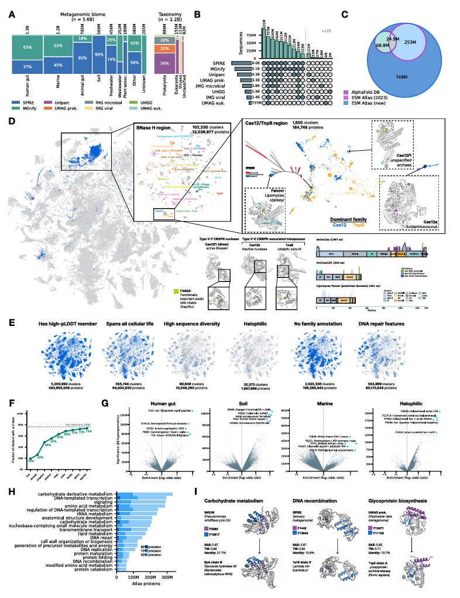

这篇《Language Modeling Materializes a World Model of Protein Biology》不能只读正文。原因很简单，正文负责把五条主线讲顺：
ESMCESMFold2SAE 可解释性分析68 亿 蛋白 atlas但如果你想真正理解作者的技术路线，方法细节才是主战场。因为它不只是补充信息，而是完整交代了：
6B68 亿 蛋白上如何做近似聚类而不是直接爆算力如果把正文看成“结论层”，方法部分其实是“工艺层”。而这篇文章最值得学习的，恰恰就是它的工艺。

论文把 ESMC 的骨架写得很清楚：它是蛋白质序列上的 Transformer，但不是默认 GPT/bert 配置直接套过来。
架构上，模型包含 token embedding、Transformer block 堆栈和输出 head。输入词表除了 20 种标准氨基酸，也包含特殊 token。每个 block 采用 pre-norm，包含：
MHAFFN几个关键实现细节值得单独记住：
RoPE，不是传统 learned positional embedding。query 和 key 在线性投影后先做 layer norm，再算 attention score。64。SwiGLU。这些选择的目标很一致：稳定大规模训练，避免模型一深就炸。
论文列出了三档 released 模型：
ESMC 300M：30 层，d_model=960，15 个头，约 3.33 亿 参数ESMC 600M：36 层，d_model=1152，18 个头，约 5.75 亿 参数ESMC 6B：80 层，d_model=2560，40 个头，约 63.5 亿 参数这不是只为了“有大中小三个版本”。作者后面所有 scaling 分析，都是围绕这三档模型展开的。
这部分是方法细节里最关键的信息之一。
ESMC 训练数据来自三个来源：
UniRefMGnifyJGI Metagenome作者先在各自数据库内部做聚类降冗余，大致得到：
8300 万 cluster3.72 亿 cluster20 亿 cluster然后训练分两阶段：
Stage 1
100 万 steps512UniRef 36%MGnify 11%JGI 54%Stage 2
50 万 steps2048UniRef 63%MGnify 6%JGI 31%这套配方其实很聪明。第一阶段利用海量 metagenomics 学“广覆盖统计规律”，第二阶段再用更高质量的参考序列和更长上下文把表示打磨细。正文里那句“数据更多了，所以 ESMC 比 ESM2 更强”，方法细节告诉你，这个“更多”并不是盲目堆积，而是配过方的。
ESMC 使用 masked language modeling 目标，mask 比例 15%。损失不是简单 token 平均，而是按 sequence 做加权，尽量避免长序列天然贡献更大梯度。
优化器和训练设置是：
AdamWβ1=0.9β2=0.95ε=1e-81.0300M/600M 用 bf16 mixed precision6B 用 FP8 mixed precision学习率策略是 WSD，也就是 warmup-stable-decay：
1000 steps0.1x更关键的是作者用了 µP（Maximal Update Parameterization）思路做跨模型尺寸缩放。它的意义在于：先在小代理模型上调出 base learning rate 和 weight decay，再把这些规则迁移到更大模型，而不是每个尺寸都手工调一轮。这一点很少出现在“结果导向”读法里，但从工程上看，这是把研究原型变成可扩展训练系统的重要一步。
这一节不只是常规 benchmark，而是在设计不同 probing task 去测潜空间。
这是最基础的一层。作者沿用此前 ESM 系列思路，用 attention map 去预测 Cβ < 8 Å 的 residue contact。训练 logistic regression 时只用了 20 个训练结构，而评估集是从 PDB 里按 40% 序列一致性聚类后得到的 20,775 条链。
关键指标是：
L 的蛋白≥24 的 residue pairL 个预测P@L这其实是个很苛刻的 probe，它测的是“结构信息有没有自然长在表示里”，而不是“下游任务能不能 fine-tune 出结果”。
作者又构造了一个来自 SwissProt + TED 的数据集：
10,371 个蛋白条目8493 条唯一序列57 个 EC 类别然后对 ESMC 6B 每一层的 hidden state 做：
10 维k=100 的 kNN 做 EC 分类正文里图 1D 的结论，就是从这里来的。也就是：功能信息在中后层达到峰值，而结构信息更晚出现。这个发现如果没有完整方法，其实很难判断它是不是“只挑了一个好看的分析方式”。现在方法摆出来了，结论就稳很多。
这一部分很值得重视，因为它直接针对一个深层问题：模型是只会“按 fold 猜功能”，还是学到了跨不同结构拓扑共享的功能方向？
作者把 SwissProt、AlphaFold DB v4 和 TED 拼起来，筛选标准很严格：
≤512然后只挑那些“同一个 EC 号在多个不同 CATH topology 中都出现”的酶类，做 structural holdout。最后得到：
99 个 (EC, CATH) train-test split42 个唯一 EC10 个跨拓扑仍有高序列一致性的 EC，避免假泛化这个 benchmark 的目的是找“潜空间中能跨结构泛化的功能方向”，而不是单纯做最优 EC classifier。它和正文里“function and structure appear along nearly orthogonal axes”的结论是直接对应的。
作者还拿 Megascale 稳定性数据集做了线性 probe，数据量是 77.6 万 datapoint，涵盖 331 个天然结构域和 148 个 de novo 结构域。作者不是随机切分，而是先按 Foldseek 的结构聚类做 split，再按 wildtype 的 pseudo-perplexity 分层，避免 train/test 因为语言模型熟悉程度不同而失真。
这说明作者在方法设计里关心的不只是“有没有效果”，还关心“评估有没有把问题问对”。

如果只看正文，很容易把 ESMFold2 理解成“ESMC 的一个下游头”。方法细节会让你意识到，它其实是一个很重的结构系统。
作者把 ESMC 各层表示先做 pooling，再投到 pair representation 里。然后整个结构预测过程大致分为：
最核心的变化，是作者把 pair state 更新做得更轻，并引入“稳定递归更新”。这意味着模型训练时虽然只看有限 loop 数，但推理时可以把 loop 数继续拉高，换取更高精度，尤其是在更难的抗体-抗原场景。
在传统大结构模型里，pair state 模块通常很重，而 ESMFold2 的做法是简化 pair folding layer，只保留必要操作，比如 triangle multiplication 和逐状态前馈计算，并显式去掉一些高成本组件。作者还用 contractive map 稳定递归，让 repeated loops 不至于数值发散。
论文点明：训练时只反传有限次循环，但推理时更多 loops 仍然有益。正文中所谓的 inference-time scaling，就是从这里来的。
方法部分写得很清楚，最终结构坐标不是 trunk 直接回归出来的，而是通过 diffusion transformer 去噪得到。为了让这个 diffusion 足够轻量、又保持几何感知能力，作者把原本重的 atom-pair bias 去掉，改成：
3D RoPE 把几何信息编码进 query/key这一步非常巧。它让注意力机制在没有显式巨大 pair tensor 的情况下，仍然对相对几何敏感。对大体系推理速度和显存压力都有帮助。
正文里你看到的是 pLDDT / ipTM / PAE 等指标能做排序和选样。方法细节里才知道 confidence head 本身是认真设计过的：
all-atom pLDDTresolved statusPDEPAE训练时，作者还会：
这让它不只是“附加一个分数头”，而是一个认真校准过的质量估计器。
这一段是方法部分最值钱的地方之一。
ESMFold2 训练不是一个 loss，而是这些项的组合：
并且分三阶段：
Stage 1
Stage 2
Stage 3
总损失里，论文给了明确权重：
α_struct = 4.0α_dist = 3e-2α_conf = 1e-4这说明作者清楚哪些部分是主监督、哪些是辅助校准。
训练数据由两部分构成：
30% PDB70% 高置信 AFDB其中 AFDB 样本要满足：
pLDDT > 70200–1000>0.5最后保留约 880 万 结构作为 synthetic distillation 集。
PDB 这边也有很多过滤：
2021-09-30 前结构>9 Å 去掉300 条 polymer chain 去掉>30% 的样本跳过cropping 也不是随机切片，而是三种策略混合：
对 multimer 数据默认权重是：
0.200.400.40这基本就是在明确告诉模型：界面信息必须被反复看到。
MSA 构建也很扎实。PDB 样本上会调用：
对多链复合物，UniProt MSA 还会按 taxonomy ID 做 paired MSA。AFDB distillation 则用改造版 ColabFold/MMseqs2 pipeline，强调的是吞吐效率。
论文给出的训练开销是：
ESMFold2：256 张 H100，总训练 127 小时ESMFold2-Fast：85 小时混合精度配置是：
FP8bf16float32推理上，默认设置大致是：
10240.10.310 loops + 68 diffusion steps而在更便宜的大规模结构预测配置中，atlas 使用的是更轻的 3 loops + 22 diffusion steps。这类数字在正文里通常一笔带过，但对理解“作者到底把模型部署成什么形态”非常重要。

这部分是整篇论文最硬的实验路线，因为它把“AI 设计蛋白”真正写成了可操作流程。正文里你会看到一句高度概括的话：作者把 ESMC 和 ESMFold2 组成一个 joint model，然后在输入空间里搜索能和目标结合的序列。方法部分则把这句话拆成了完整工程链路：设计变量是什么、目标函数是什么、怎么避免模型走偏、怎么从成千上万候选里选出少量样本去做湿实验，以及为什么增加推理计算量会让真实命中率上升。
每次设计从一个 x ∈ R^{L×20} 的状态张量开始，L 是 target 序列和 binder 序列拼接后的总长度。这个张量不是离散氨基酸序列，而是“每个位置对应 20 种氨基酸的连续 logits 分布”。这点非常关键，因为只有在连续空间里，作者才能把语言模型和结构模型都作为可微函数来做梯度下降。
已知位置，比如：
直接固定成 one-hot 或近 one-hot；待设计位点用 N(0, 0.012) 初始化。
然后做 150 步梯度下降：
x_{k+1} = x_k - α_k ∇L(x_k)
学习率是 step-dependent 并逐步 anneal。也就是说，前面先在连续空间里大步搜索，后面再逐渐把分布“压尖”，逼近一个可离散化的真实序列。
这里最容易被忽略的一点是：作者搜索的不是“孤立 binder 序列”，而是“target + binder 的联合状态”。因此，优化看到的始终是“这个 binder 在这个目标背景下会折成什么样、界面会怎么形成”，而不是先设计一个单独稳定蛋白，再希望它能碰巧黏上目标。
论文明确写了四部分损失：
ESMC 的 sequence prior 约束直白说：
这就是为什么作者把设计解释成联合优化 p(sequence) 和 p(structure | sequence)。
这里可以再展开一点。
第一项和第二项都来自 ESMFold2 的 distogram logits。作者没有直接用最终三维坐标来做优化，而是用 distogram 这个更平滑、更适合反传的中间表示。对 binder 内部和 cross-chain 联系都要求“低熵”，本质是在逼模型给出清晰、确定的空间关系，而不是模棱两可的一团概率云。
第三项 packing radius 惩罚是在防一种很常见的坏解：模型可能找到一个“理论上有几个接触点”，但整体非常松散、拉长、没有正常 globular packing 的序列。packing 约束实际上是在把 binder 往“像一个真正蛋白”的几何状态里压。
第四项 ESMC 语言模型先验尤其重要，因为如果没有它，结构模型驱动的优化很容易钻模型漏洞，产生一些看起来能结合、但极不自然、极不稳定、难以表达的“对抗性序列”。语言模型项相当于给搜索加上了“进化可接受性”和“折叠合理性”的软约束。
所以从方法上看，这里的设计逻辑不是“让一个模型发散想象”，而是让两个模型彼此牵制：结构模型负责界面目标，语言模型负责自然性和可实现性。
比如作者直接禁掉 cysteine 设计：
-10^6原因很现实：不想让模型为了讨巧而引入不受控二硫键。
最后几步还会额外跑 diffusion 和 confidence，计算 ipTM，取 ipTM 最好的离散序列作为该条 trajectory 的输出。
这一步意味着优化过程和最终交付结果并不完全是一回事。优化时主要靠 distogram 这种连续目标来导航，但在最后落地成具体候选时，作者会切换到更接近最终结构可信度的指标，也就是 ipTM。这相当于先用便于优化的代理目标找方向，再用更接近实际结构质量的指标做末端选择。
另一个很重要但正文不容易看出来的点是，作者明确提到可以用多套不同权重的 ESMFold2 共同构成 loss 或 critic。这是为了减少“过拟合某一套模型权重”的风险。简单说，如果某个序列只会骗过一套结构模型，它在多 critic 体系里通常排不上来。
设计靶点是五个：
EGFRPD-L1PDGFRβCTLA-4CD45每个靶点用的是指定的 target crop，论文甚至把 residue 区间和长度都列出来了，比如：
PD-L1：18–132，长度 115CTLA-4：38–155，长度 118EGFR：334–524，长度 191PDGFRβ：126–312，长度 187CD45：390–574，长度 185这件事看起来像普通方法细节，其实很重要。因为作者不是把整个目标蛋白原封不动拿进搜索，而是人为定义了“设计应该聚焦在哪一段暴露、可接近、且与生物学问题相关的胞外区域”。这会显著降低搜索空间，也让后续实验验证更可控。
minibinder 长度从 60–200 aa 均匀采样。
scFv 则使用几个治疗抗体框架作为 scaffold：
但并不是每个靶点都可随便用，比如为了避免 framework bias，PD-L1 设计时明确排除了 atezolizumab scaffold。
CDR 设计也不是自由发挥，而是按 Chothia 编号定义，并给出各条 CDR 的长度范围。也就是说，作者是在“保留抗体基本语法”的前提下，让模型设计最关键的识别区域。
这背后反映出两种完全不同的设计哲学：
minibinder 追求的是从头找到新的小型结合骨架scFv 追求的是在已知抗体框架内重写识别界面前者给模型更大自由度，后者则更贴近抗体工程和药物开发的现实路径。作者同时做两种 modality，本质上是在测试这套 joint model 是不是只会在一种设计空间里奏效，还是确实具备更一般的界面设计能力。

这是理解“inference-time scaling”最实在的一段。
每个 target × modality × compute scale 最终都会选 84 个做湿实验验证。但上游候选数差很多：
Minibinder
15,00067,000500 vs 2400 H100-hoursscFv
28,000117,0001800 vs 7700 H100-hours两级实验共同使用 ESMC 6B 做语言模型项。search 使用两套 experimental fast folding model；ranking 默认用 4 个 folding model ensemble；大规模实验则把 ranking ensemble 扩展到 19 个模型。
这意味着正文里那句“更多推理算力提高 hit rate”，在方法细节里其实被拆成了三个动作：
这不是一个口号，而是一条有具体资源代价的策略。
而且论文把 ranking 的逻辑说得很清楚。不是所有设计轨迹的产物都值得进实验，所以真正决定 hit rate 的并不只是“会不会搜到一些好序列”，更重要的是“能不能把那批好序列从海量候选里捞出来”。
对 minibinder，作者会先过滤 pI > 6.0 的设计，目的是减少近中性等电点导致的非特异结合和聚集倾向。这个条件说明他们在 ranking 前就已经开始融入实验可开发性考虑，而不是只看模型分数。
随后用一个或多个 ESMFold2 模型对 target-bound complex 做重新评估，分数核心是：
ipTM大规模实验里，作者不是简单取 19 个模型 ipTM 的平均，而是先在“真实 ipTM”和“distogram proxy”两类 critic 内部分别聚合，再取二者平均。这种设计很像工业界常见的多视角集成打分，目标是减少任何单一 confidence head 偏差对最终选样的影响。
论文甚至给了一个专门的 Distogram ipTM Proxy 算法。它不是生搬硬套 ipTM，而是对 binder-target block 的 distogram logits 重新归一化，只关注接触阈值内的距离分布，再用低熵、明确的接触对作为高置信界面信号。对抗体设计时，作者进一步把打分限制在 Chothia 定义的 CDR 残基上，等于明确告诉模型：真正重要的是识别界面的质量，而不是整个抗体结构看起来有多自信。
这一部分尤其值得学。
设计蛋白先用 PURExpress 做 8 μL 体外翻译。scFv 会额外加 disulfide bond enhancer。然后用 Twin-Strep-tag 捕获到 Strep-Tactin XT 探针上，再上 Gator Prime 做 BLI 筛选。
流程是：
2 μM ovalbumin 看非特异2 μM命中定义分两档：
宽松标准
>0.5 nm>0.1 nm严格标准
>0.5 nmEGFR 0.25 nmCTLA-4 0.25 nmPD-L1 0.25 nmCD45 0.4 nmPDGFRβ 0.4 nm边界样本还要人工审 curve shape。
这段细节非常能说明问题。作者不是把任何“有点反应”的样本都算 hit，而是在通过 target-specific cutoff 和人工复核尽量把 nonspecific binding、baseline artifact 排出去。
再往下看，实验方法里其实还有几个很实用的设计考虑。
第一，所有设计先在 in vitro translation 体系里快速表达，这样吞吐量高、周转快，非常适合早期大规模筛选。真正值得进一步研究的候选，才进入放大量表达、纯化和更细的表征。
第二，BLI 筛选前加了 ovalbumin off-target 结合步骤，这不是形式主义，而是在前置排掉“什么都沾”的假阳性。很多设计类项目最终死在这一关，因为模型优化出来的是高表面黏性而不是真正特异识别。
第三，baseline correction 是拿最近的 negative control binder 去扣，而不是只用空白探针。这说明作者非常清楚 plate drift、局部实验波动和 tag/surface-related background 会怎样影响大规模筛选数据。
第四，命中不是只看一个阈值，还要求 association 段有合理的正指数曲线形状。这也是典型的实验经验：只有幅度没有 kinetics 形态的信息，往往不够可信。
后续验证还包括：
E. coli 表达与纯化SECcryo-EMELISAPD-L1/PD-1 blockade assay这说明“设计成功”在这篇论文里不是一个单指标准，而是：
这里还可以再强调一层：这套实验验证路径本身就在回答“模型到底学到的是界面几何，还是只学到某种表面黏性启发式”。
如果只是表面黏性，通常会出现这些问题：
SEC 很差而作者后续做的 SEC、竞争 ELISA、活细胞免疫荧光、同源体排除、cryo-EM、功能阻断，实际上是在逐层排除这些更无聊、也更常见的解释。如果所有证据都对得上，才能说明模型不是只优化出“能黏上去”的序列，而是真的在一定程度上抓到了目标识别和界面形成的决定因素。
正文把“world model”这个词说得很大，但如果一定要找一个最实证的落点，其实就在 binder 设计。
因为这里第一次看到，作者不是把语言模型当成 feature extractor，也不是把结构模型当成单向预测器，而是把两者一起反过来当成“数字实验环境”：
这就解释了为什么作者强调增加 inference compute 会提高实验命中率。对于传统预测任务，更多算力往往只是更精确地逼近一个答案；但对这种 design task，更多算力其实是在做更多“虚拟试验”，而命中率提升本质上说明这个虚拟环境和现实实验之间已经建立起了可利用的一致性。
从这个意义上说，binder 设计不是正文 Figure 3 的补充材料，它其实是全文最接近“把模型世界和现实世界接起来”的地方。

这一部分如果只看正文，很容易觉得“作者找了些 feature 来讲故事”。方法细节会让你意识到，他们做得远比这个系统。
作者对不同模型层、不同 feature dimension、不同 sparsity 都训练了 SAEs。训练数据量是：
80 亿 token并且覆盖：
正文主要分析的是：
ESMC 6B60 层附近2^14 = 16,384 feature64 个活跃特征这个配置选得并不随意，而是因为正文图 1D 已经显示功能分类在 50–60 层附近达到较强状态。
作者不是自己盯着 activation heatmap 硬命名，而是构建了一个基于 195,000 个 SwissProt 非冗余蛋白的 agentic system。系统会看到：
然后做五轮假设生成与验证，最终输出 feature summary。
这不代表 feature 一定“真相唯一”，但说明作者至少试图把解释过程标准化。
这里最强的一层，不是发现单个特征，而是说明这些特征可以组合。
比如 kinase 例子里，作者区分了：
然后再看这些特征在不同 kinase 家族里如何共同激活。也就是说，模型内部不是“每种功能一个标签”，而是“同一功能由一组不同抽象层次的 feature 组合而成”。
作者进一步拿 feature space 做了多件事：
也就是说，这个空间在作者手里已经不是“解释用附件”，而是一个新的 functional representation。

这部分如果不读方法细节，最容易低估。
作者从多个数据库收集序列，包括：
UniParcSPIREMGnifyUHGGJGI IMG 多个子库先在各数据集内部按 90% 身份聚类，再合并，并限制序列长度在 60–1000 aa，再做跨库 70% 聚类，最后得到：
1,095,527,764 个 representative sequence这些是 atlas 结构预测的对象。
结构预测配置也给得非常具体：
esmfold2-exp-2026-033 loops22 diffusion stepsstep scale = 2.0noise scale = 0.3这说明 atlas 不是拿正文里最强、最贵的推理参数跑的，而是一个吞吐量与质量折中的全局配置。
所有 atlas 蛋白都会用 Pfam-A release 38.1 通过 pyhmmer.hmmsearch 做 domain annotation，并记录：
这一步不是为了替代 SAE clustering，而是为了在 cluster 之后评价“这个 cluster 是否已有家族注释、注释覆盖多少、是否属于已知功能空间”。
作者想做的是：
0.6问题是，68 亿 蛋白做全对全 Jaccard 根本不可行。
所以他们设计了线性时间近似算法，本质是：
IDF-based feature pruningMinHash sketchLSH banding这一步的技术点很实在。因为很多 SAE feature 很“普适”，如果不先剪掉信息量低的 feature，会导致随机蛋白之间 Jaccard 背景也很高，bucket 巨大而混乱。作者用 inverse protein frequency 阈值 0.87 去掉了 3,635 个 feature，约占全部 feature 的 22%，把随机背景 Jaccard 的中位数从很高水平压到了 0.02。
之后他们再用固定长度的 MinHash sketch 做近似集合比较，并取 256 维 sketch 用于下游 Jaccard 估计。对 J=0.6 的相似度，论文还给了方差量级估计，说明他们是认真算过误差的。
这部分是 atlas 最不像“论文配角”的地方。因为如果没有这套 hash-based clustering，正文里所有“在潜空间组织数十亿蛋白”的结论都只是愿景。
atlas 分析还做了很多有意义的二次读图：
<30% 但结构仍保持一致的群体比如 sequence-diverse cluster 分析里，作者统计出：
80,646 个 cluster 平均 pairwise identity <30%87.5% 仍有单一 consensus fold这说明 SAE 空间抓住的不是简单同源关系，而更接近“结构/功能层面的收敛组织”。
如果你只看正文，你会觉得这是篇野心很大的论文。
如果你认真看完这些方法细节，你会发现它厉害的地方不只是野心，而是把野心拆成了一整套能执行的工艺：
这也是为什么我会说，正文负责“立论”，方法部分负责“交货”。
正文让你相信蛋白质语言模型也许正在成为一种统一的生物学表征底座；方法细节则让你看到，这种统一并不是一句口号，而是靠模型架构、数据配方、训练策略、筛选规则、实验门槛和大规模算法一步一步拼出来的。
所以如果你问这篇论文最值得学的是什么，我的回答不会是某个单独数字，也不会只是 6B、11 亿结构 或 68 亿序列。真正值得学的是它的系统方法观：不是把一个模型推到极限，而是把“预训练表示、结构预测、设计、解释和大规模组织”真正接成一条线。
而这条线，只有在方法细节里才完整出现。